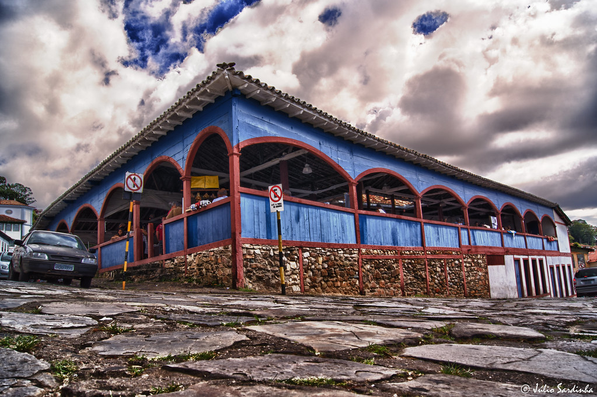
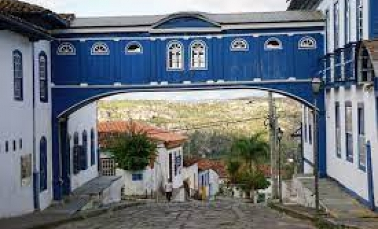
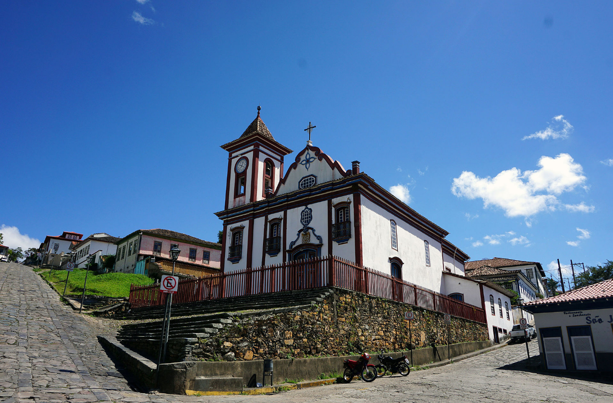
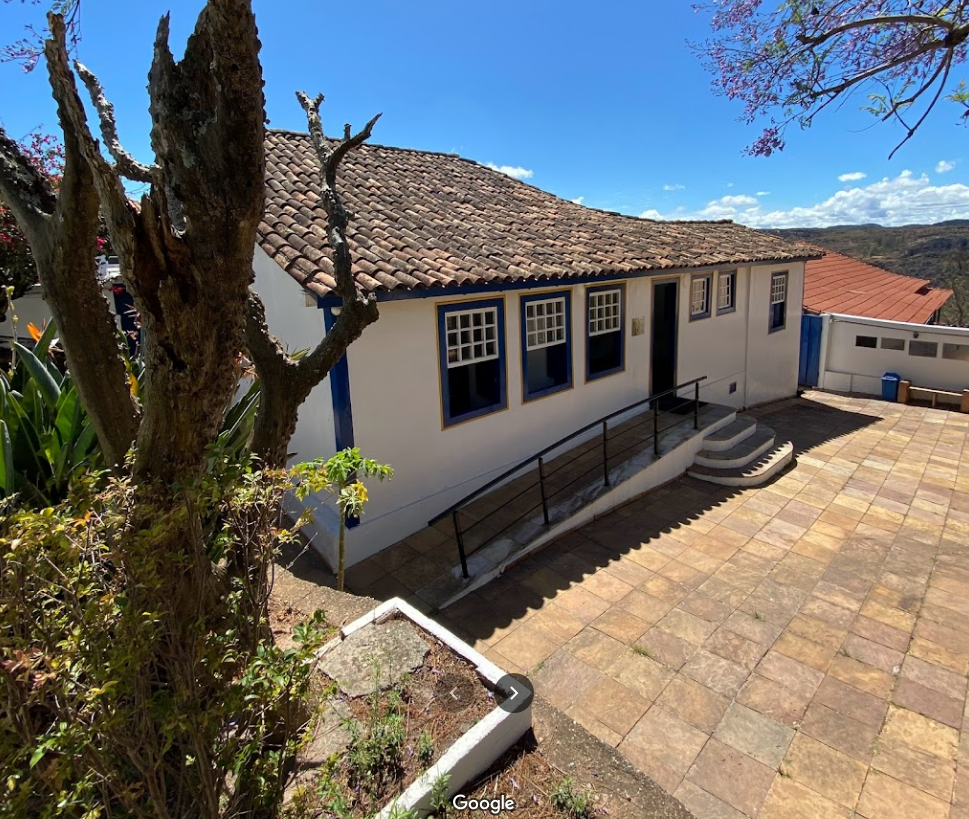

Mercado municipal de diamantina

Localização
O Mercado Municipal de Diamantina, em Minas Gerais, é um verdadeiro tesouro cultural e gastronômico. Com sua arquitetura
histórica encantadora, o mercado oferece uma variedade de produtos locais, desde frutas frescas e vegetais até queijos
artesanais e doces típicos da região. É um lugar onde os visitantes podem mergulhar na atmosfera vibrante da cidade, explorar
sabores autênticos e desfrutar de um ambiente acolhedor e acolhedor. Além disso, o mercado também abriga lojas
de artesanato e souvenirs, oferecendo uma oportunidade única de levar para casa lembranças especiais de Diamantina.
O passadiço

Localização
O Passadiço de Diamantina, em Minas Gerais, é uma charmosa passagem histórica que nos transporta de volta no tempo. Com suas construções coloniais
preservadas e ruas de pedra, o passadiço oferece uma atmosfera encantadora, onde é possível caminhar e apreciar a arquitetura colonial única da cidade.
À medida que percorremos seus corredores estreitos, somos envolvidos pela rica história e cultura de Diamantina, proporcionando uma experiência
autêntica e memorável. O passadiço é um convite para explorar cada cantinho, descobrindo encantos e segredos de uma cidade que guarda preciosidades
em cada esquina.
Igreja de São Francisco de Assis

Localização
A imponente Igreja de São Francisco de Assis é uma obra-prima arquitetônica e religiosa. Com sua fachada
ricamente ornamentada e detalhes esculpidos em pedra-sabão, a igreja é um exemplo impressionante do estilo barroco brasileiro.
Ao adentrar seu interior, somos recebidos por um ambiente de beleza serena, com altares dourados, pinturas sacras e uma
atmosfera de devoção. É um lugar sagrado que transmite a história e a fé de Diamantina, convidando os visitantes a contemplarem
sua grandiosidade e se maravilharem com a arte sacra.
Casa de Juscelino Kubitschek

Localização
A Casa de Juscelino Kubitschek, em Diamantina, é um local de grande importância histórica e cultural. Nessa modesta casa de pedra
onde nasceu o ex-presidente do Brasil, podemos vislumbrar os primeiros passos de um dos líderes mais emblemáticos do país. Preservada
em sua estrutura original, a casa abriga um acervo de objetos pessoais, fotografias e documentos que contam a trajetória
de Juscelino Kubitschek. É uma oportunidade única de conhecer mais sobre a vida e legado desse grande líder brasileiro, além
de mergulhar na história política do Brasil do século XX.